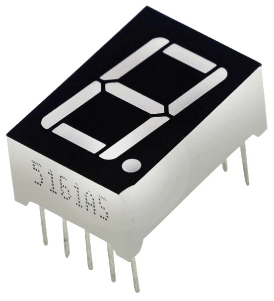
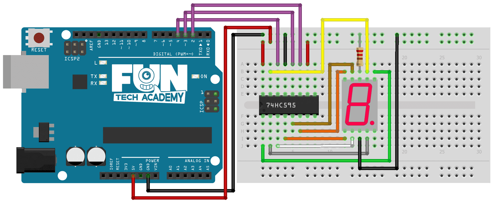
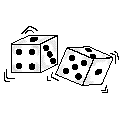

En este tema aprenderemos a conectar y desplegar una secuencia de números en nuestro Display de 7 segmentos de ánodo común.
(1) x Placa Arduino
(1) x Protoboard
(1) x Registro De Turnos 74HC595
(1) x Pantalla de 7 segmentos
(8) x Resistencia de 220 Ohm
(x) x M M cables (cables de macho a macho)
Cuando creamos un proyecto con Arduino, normalmente mostramos los datos a través del monitor serie. Es una
manera rápida de poder comprobar los valores de variables y entradas, tanto digitales como analógicas.
Existen diferentes interfaces de hardware que permiten que las máquinas se comuniquen con nosotros. Una de
ellas es el display 7 segmentos, un componente muy típico.

Un display 7 segmentos es un componente que tiene 7 segementos LEDs que se encienden y se apagan, más un LED
que hará de punto. Este punto nos indica cómo hay que colocar el display, y siempre irá hacia abajo.
Por lo tanto, debemos trabajar como si tuviéramos 7 LEDs conectados a nuestro Arduino.
Los displays de siete segmentos se emplean ampliamente en relojes digitales, medidores electrónicos,
calculadoras básicas, pantallas de electrodomésticos, coches, y muchos otros dispositivos que muestran
información numérica.
En la siguiente imagen mostramos el diagrama de pines del display.

Existen dos tipos diferentes de displays de 7 segmentos:
- De Ánodo Común: Todos los ánodos del display están conectados a un pin común,
generalmente la fuente de alimentación, y los LED se controlan mediante los cátodos con la conexión
a tierra encendida y la potencia pagada.
- De Cátodo Común: Todos los cátodos están conectados a un pin común, en este caso
generalmente la conexión a tierra, y los LED los controla el estado de los ánodos con la conexión a
tierra apagada y la potencia encendida.
Por consiguiente, un display de siete segmentos más punto decimal solo requiere nueve pines, aunque los
productos comerciales generalmente contienen más pines para corresponderse con el estándar industrial de
distribución de pines.


Una vez efectuado todo el cableado, descargaremos el script del siguiente
enlace y lo cargaremos como hemos
aprendido.
En el ejemplo veremos como iremos escribiendo los números del 1 al 9 y el 0.
La base del ejemplo será el ejercicio del tema 19 del registro de turnos.
La diferencia es que en este ejemplo haremos una nueva función que escribirá el número dependiendo de los
pines que se le indiquen que tiene que encender.
void EscribeNumero(int pin_0, int pin_1, int pin_2, int pin_4, int pin_5, int pin_6, int pin_7)
A esta función la llamaremos "EscribeNumero" y tendrá como parámetros los 7 pines del display.
A continuación, evaluaremos cada uno de los pines a encender y si el valor del parámetro es 1, indicará que
hay que encenderlo
if (pin_0 == 1)
{
led = 0;
bitSet(leds, led);
}
Después actualizaremos nuestra variable "leds" con los LEDs a encender y llamaremos a nuestra función
"ActualizarRegistroTurnos".
bitSet(leds, led);
ActualizarRegistroTurnos();
En la función "loop", lo que tendremos será la llamada a "EscribeNumero" con los segmentos a encender para
escribir cada uno de los números.
Después haremos una espera de 1 segundo para que se vea bien el número y posteriormente apagaremos nuestro
display para poder escribir el siguiente número.
EscribeNumero(0,0,1,1,0,0,0);
delay (1000);
leds = 0;
ActualizarRegistroTurnos();
Repetiremos esta operación por cada número que queramos escribir.
Ya sabemos como escribir números en nuestro display de 7 segmentos con el registro de turnos. Ahora vamos a implementar un dado electrónico.

Para ello, añadiremos a nuestro circuito un botón para lanzar el dado y cada vez que lo presionemos, nos escribirá un número de forma aleatoria.
Volver al índice